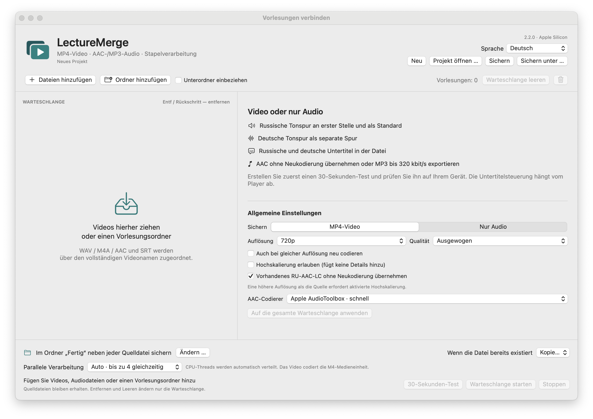

macOS 14+ · Apple Silicon
LectureMerge
Verbindet Vorlesungsvideo, Sprachausgabe, Originalton und Untertitel als MP4; exportiert auch Audio.
Release · 2.2.0Vor dem StartLokale Verarbeitung ohne externen Dienst. Ad-hoc signiert, keine Apple-Notarisierung.


So funktioniert es
- Video + Ton + Untertitel
- Einstellungen prüfen
- MP4 speichern
Erste Schritte
App-Archiv entpacken, Video, Audio und Untertitel hinzufügen. Vor dem vollständigen Export einen 30-Sekunden-Ausschnitt prüfen.